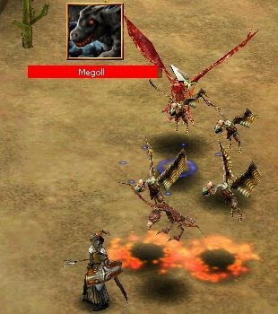
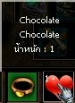

|
เจ้านกยักษ์ Megoll ที่ทุกท่านผ่านมาพบเจอที่บริเวณทะเลทราย Sitis
ตอนนี้เรานำข้อมูลของมันมาให้รับชมกัน
|

|
นี่ไงครับ โฉมหน้าของเจ้านกยักษ์ Lv.59 ของเรา หุหุหุ ตัวใหญ่ผิดกับนกแร้งทั่วไป
ใครอย่าหลงผิดฟันเพลินเชียวล่ะ ได้นอนกองโดยไม่รู้ตัวแน่ๆ (ผมเจอมาหลายศพแล้ว
เหอเหอ)
หากเป็นนักเวทย์ ต้องการปราบมัน ก็ไม่ใช่เรื่องยากครับ (จัดการมาแล้ว)
ให้ใช้เจ้าพวกนกแร้งเป็นโล่ห์กันชนครับ แล้วค่อยวิ่งล่อเจ้า
Megoll ที่สำคัญคือ ต้องเอานกแร้งเป็นโล่ห์เสมอนะครับ ไม่งั้นโดนกัด
สองทีซี้แน่แน่
|
| |
Lv
|
Min Atk
|
Max Atk
|
Hit
|
HP
|
Def
|
Eva
|
Fir
|
Ice
|
Lig
|
Poi
|
Drop
|
| Megoll |
59
|
773
|
857
|
700
|
7000
|
351
|
371
|
10
|
0
|
20
|
10
|
Chocolet
|
เห็นอย่างนี้แล้ว อึ้งกิมกี่ไปเลย มีอย่างที่ไหน ปล่อยศัตรู Lv.59
ออกมาในวันแห่งความรัก หุหุหุ จุดเกิดของมัน ก็อยู่ในทะเลทรายแห่งเมือง
Sirtis นั่นแหละครับ วิ่งตามหา (หรือวิ่งหนี) กันได้ ส่วนเจ้านินจา
ที่อยู่ในแผนดิน Cronous ผมยังไม่มีโอกาสได้ไปยลโฉมมันเลย แต่เขาบอกว่า
แค่ Lv.10 ก็ปราบมันได้แล้ว คิดว่าน่าจะสบายกว่า หากใครคิดจะล่า "หัวใจ"
เพื่อเอารางวัลไปฝากแฟน หุหุหุ
|  |
นี่ไงครับ ได้มาแล้ว โฉมหน้าของ Chocolate เพื่อให้หวานใจสุดที่รัก
แต่มีข้อแม้ว่า คุณต้องสะสมได้มาก ติดอันดับ 10 คนเท่านั้นนะครับ
จึงจะมีสิทธิ ได้ส่งดอกไม้ให้คนที่คุณต้องการฟรี กับรายการ Cronous
Delivery ภายในวันที่ 6 - 10 กุมภาพันธ์นี้เท่านั้น
รายละเอียดคลิกดูได้ที่นี่
|
เว็บไซต์นี้ ผมพยายามทำเพื่อให้คนเริ่มเล่น หาความรู้ และ "เล่นพอเป็น"
นะครับ ความรู้ต่างๆ ผมก็ค้นหามาจากในเว็บบอร์ด และประสบการณ์การเล่นส่วนตัว
และของเพื่อนๆ รวมๆ กัน อยากให้คนมาเล่นเกมนี้กันเยอะๆ แม้ระบบต่างๆ
จะยังไม่สมบูรณ์ แต่ผมคิดว่า ถ้าระบบต่างๆ ที่ตอนนี้เขา "อุบ"
ไว้เปิด เกมนี้น่าจะเป็นเกมที่สนุก และเล่นได้นานอีกเกมหนึ่ง
ตอนนี้เว็บไซต์ยังไม่เรียบร้อยดี แต่รีบเปิดตัว (ไปหน่อย) เดี๋ยวข่าวล้า
จะไม่ทันได้เปิดตัวนกยักษ์ หุหุหุ ใครมีไอเดีย อยากบ่น อยากว่า อยากติ
หรืออยากร่วมเดินทางไปกับผม ก็ติดต่อมาได้นะครับ
Pratya_pi@hotmail.com
pipe@nakhon.net
ส่วนเว็บต้นทางของผมอยู่นี่ครับ ว่างเว้นก็แวะไปเยี่ยมบ้าง

|